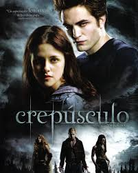
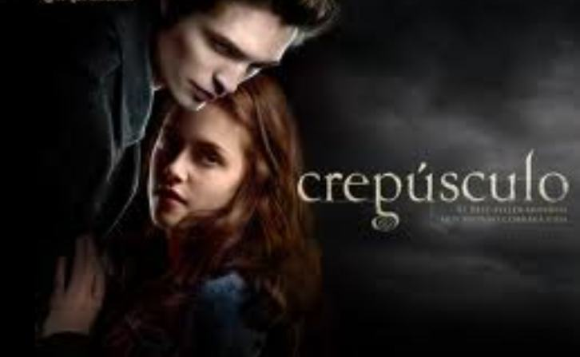
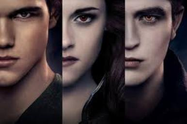
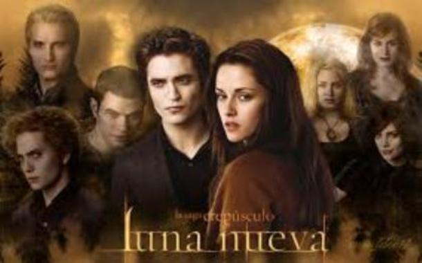
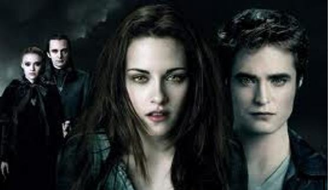
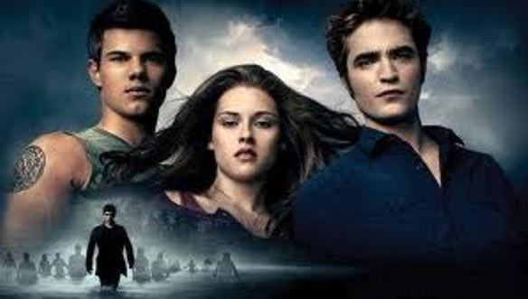

#La saga Crepusculo

• 1.1 Crepúsculo
1.2 Luna nueva
1.3 Eclipse o 1.4 Amanecer
1.5 Sol de medianoche
1.6 La segunda vida de Bree Tanner
2 Lugares
3 Estructura y género
4 Temas e inspiración
5 Orígenes y publicación
6 Recepción e influencia
6.1 El "fenómeno Crepúsculo"
o6.2 Críticas literarias
6.3 Repercusión
6.4 Películas
• 7 Notas
• 8 Referencias
• 9 Enlaces externos
 Crepúsculo Artículo principal: Crepúsculo (novela) Crepúsculo (en inglés: Twilight) es la primera novela de la serie del mismo nombre "Crepúsculo" . Narra la historia de Bella desde el momento que decidió mudarse de a la ciudad de Forks en el estado de Washington; conoce a Edward Cullen, hijo de Carlise y Esme, familia vampiro, Bella se enamora perdidamente de Edward. Las consecuencias de este amor marcan un cambio total en la vida de Bella. Descubre el mundo hasta ahora desconocido para ella de los vampiros. Pone su vida y la de su padre en riesgo, al confrontarse con un aquelarre formado por tres vampiros quienes no comparten el respeto por la vida humana (Victoria, Laurent y James), que también tienen una confrontación con la familia de Edward al tratar de defender a Bella. la historia es fictiva, donde también existe el romance y un amor no correspindido.  Luna nueva Artículo principal: Luna nueva (novela) Luna nueva (en inglés: New Moon) es la segunda entrega de la serie. La novela describe el conflicto interno sufrido por Edward Cullen cuando reflexiona el gran riesgo que supone convivir con el mundo vampírico para la humana Bella Swan. La trama gira en torno a la separación de la pareja, por decisión de Edward, y al acercamiento de Bella a su amigo de la infancia Jacob Black; hecho que abre otro mundo entonces desconocido por Bella, el mundo licántropo de la familia Black y la comunidad Quileute de La Push, comunidad cercana a Forks, ciudad donde se desarrolla la historia de la serie. Este acercamiento a los licántropos, enemigos naturales de los vampiros según la mitología de la serie (las leyendas quileute llaman a los vampiros con el término fríos), crea un profundo conflicto en Bella y sus homólogos sobrenaturales a lo largo de la serie; mismo que Alice, la hermana de Edward lleva a Bella a Italia para reencontrar y salvar a Edward Cullen ya que Edward desea que los Vulturis le quiten la vida, pues él cree que Bella ha muerto y su vida sin ella ya no tiene sentido. Cuando Bella evita que Edward se exponga a la luz del sol ante la vista de los humanos, es llamado por los Vulturis y al querer quitarle la vida a Edward, Bella se ofrece en su lugar. Pero en el instante en que se dispone a entregar su vida, Alice les explica a los Vulturis que Bella será una de ellos, pues ella la ha visto en sus visiones. De esta forma, les perdonan la vida a todos con la condición de que Bella sea convertida en vampiro.  Eclipse Artículo principal: Eclipse (novela) Eclipse es la tercera novela de la serie. Se inicia con Victoria atacando a RileyBiers para que lidere el ejército de vampiros neófitos que ella está creando con el fin de atacar a Bella y la familia Cullen. En Forks, Edward Cullen le explica a Bella acerca de las complicaciones de convertirse en un vampiro y se niega a darle la inmortalidad hasta que estén casados y ella haya tenido diversas experiencias humanas. Mientras tanto, Charlie Swan está investigando la desaparición de RileyBiers y otros jóvenes, y Edward sospecha que su desaparición fue causada por vampiros. Durante una de sus visitas, Jacob confiesa que está enamorado de Bella y la besa sin su consentimiento. Furiosa, lo golpea y se rompe la mano y, luego, Edward sale a la defensiva diciéndole que nunca más se atreva a tocar a Bella sin su consentimiento. Mientras tanto, Alice tiene una visión del ejército de los neófitos, atacando a Forks y siendo dirigido por RileyBiers. A pesar de los temores de Edward por la seguridad de Bella, ella insiste en que Jacob y el resto de la manada hombre lobo no le haría daño, pero Edward sigue sin estar convencido. Bella va a La Push a ver a Jacob y regresa a su casa a salvo. Jacob, acompañado por Quil y Embryescuchan esto, lo que conduce a una alianza entre los Cullen y los hombres lobo. Más tarde, los Cullen y los lobos acuerdan un lugar de encuentro y el tiempo para entrenar y discutir la estrategia. Durante el entrenamiento Jasper le explica a Bella que fue creado por un vampiro llamado María que controlaba un ejército de neófitos. También le confiesa que odiaba a su existencia original y al encontrarse con Alice, se unió a los Cullen. Edward y Bella hacen un campamento en las montañas nevadas para esconderse de los neófitos sedientos de sangre que van por ella impulsados por Victoria. Durante la noche, Bella casi muerta de frío es abrigada por Jacob con el consentimiento de Edward quien no puede hacer nada para mantenerla tibia, y mientras duerme acontece una conversación entre Edward y Jacob, en la que temporalmente parece que podrían ser amigos. Por la mañana, Jacob escucha a Edward y Bella hablar sobre su compromiso de boda y él se molesta mucho. Antes de que pueda salir a hacerse matar en la lucha con los neófitos, Bella le pide desesperadamente a Jacob que la bese, y ella se da cuenta de que lo ama también. Bella retorna a Edward y le pregunta si los vio pero él le indica que no, pero lo supo al leer los pensamientos de Jacob, ella le dice que no sabe porqué lo hizo pues está segura de que lo ama más a él (a Edward), ante lo cual Edward le contesta que él lo sabe, sin embargo aunque esto le causa un sentimiento de conflicto interno pues siente que su amor por Bella puede ser interferido por Jacob, actúa con total ecuanimidad, sin aparentar molestia alguna. Victoria encuentra el escondite de Bella. Edward mata a Victoria mientras Seth se deshace de Riley. Los Cullen y los lobos Quileute, mientras tanto, destruyen a su "ejército", aunque Jacob resulta lastimado por proteger a la hermana de Seth, Leah. Varios miembros de los Vulturis llegan para hacer frente al ejército de neófitos. También ven que los Cullen están dando asilo a la neófita, Bree Tanner, que se negó a luchar y se entregó a Carlisle. Jane tortura a Bree para obtener información (Jane, del aquelarre de los Vulturis tiene el don de crear una ilusión de dolor, pero en Luna Nueva descubre que a Bella no le afecta), y a continuación, Félix se encarga de Bree y la mata, a pesar de que los Cullen les dicen que no ha participado en la guerra y no tienen el porqué de matarla. Carlisle le da la atención médica a Jacob y Bella lo visita en su casa para decirle que aunque ella lo ama, ha elegido estar con Edward. Decepcionado por su elección, Jacob acepta y le dice que seguirá luchando por ella hasta su último aliento. Bella y Edward van a su lugar favorito, el prado, donde ella le dice que ha decidido hacer las cosas a su manera: casarse, hacer el amor, y entonces así transformarse en un vampiro, y deciden que necesitan contarle a Charlie.  Amanecer Artículo principal: Amanecer (novela) Amanecer (en inglés: BreakingDawn) es el cuarto y último libro de la serie (por el momento, por queStephenie Meyer ha suspendido Sol de Medianoche). Es también el libro más extenso de la serie y está divido en dos partes. En la primera parte, narra la vida de Bella y Edward en su etapa de compromiso, su matrimonio, luna de miel y culmina con elembarazo de Bella. La segunda parte del libro es narrada desde la perspectiva de Jacob Black; esta segunda parte describe el conflicto que causa el embarazo de Bella dentro del clan ,lo que culmina en la separación de Jacob Black formando así su propia manada, termina con el nacimiento de la híbrida humano-vampiro Renesmee, hija de Bella y Edward Cullen y con la imprimación a ella por parte de Jacob. La tercera parte de la novela vuelve a ser narrada desde el punto de vista de Bella Swan, se describe la nueva vida de Bella como vampiresa, el conflicto final se desata por la revelación de la hija de Bella y Edward al resto del mundo vampírico; hecho que desencadena una serie de acciones que culminan con la confrontación de dos grandes grupos de vampiros: los Cullen y los Volturi, conflicto que Bella resuelve con sus sorprendentes habilidades.En el cual se logra ver posteriormente ,los Volturi, en especial ,Aro ,queda impresionado con el don de Bella , de hecho , se puede decir que también la quiere en su clan ,junto con Alice. 